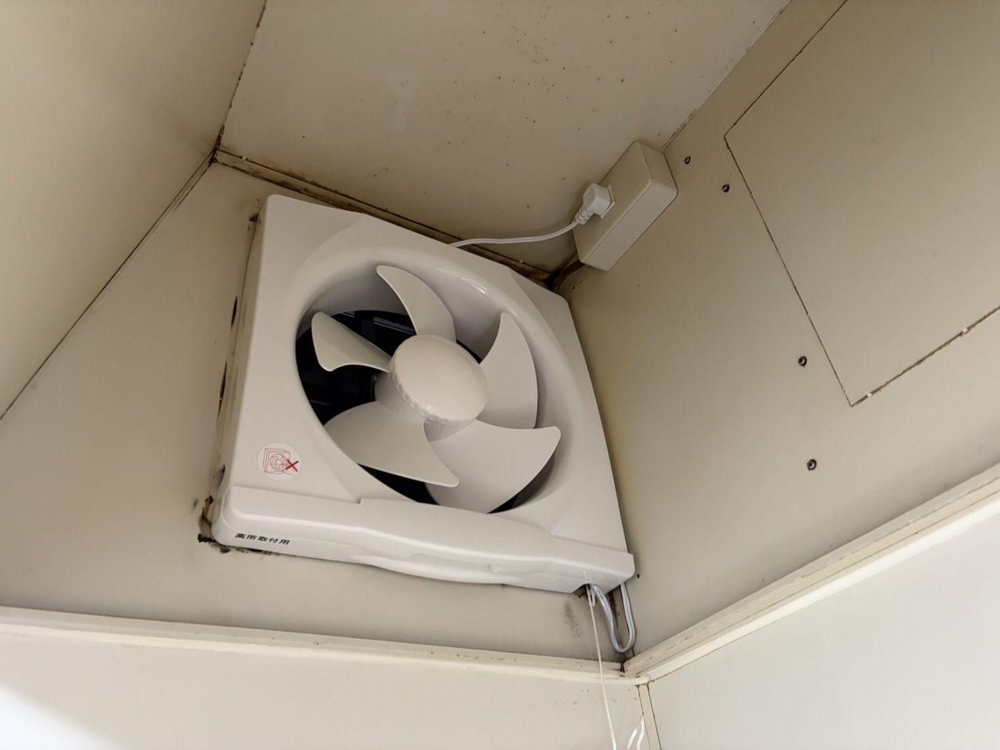
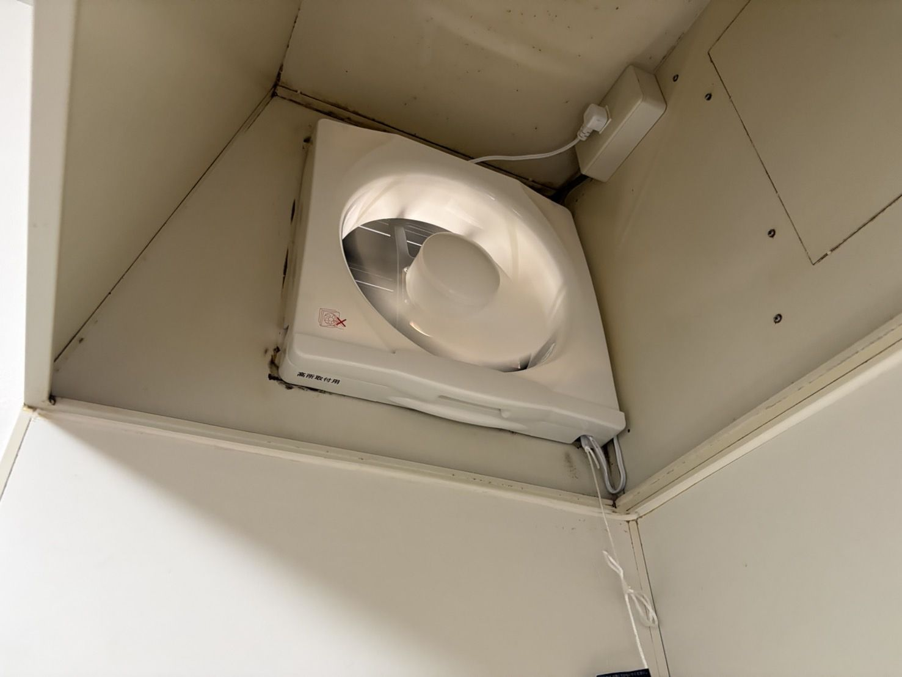

工事実績 / 換気扇交換
動かなくなった換気扇を交換しました
こんにちは、滝沢の御用聞きです。今回は、動かなくなった換気扇を交換した現場をご紹介します。新しい換気扇の仕入れから取り外し・取り付けまで、滝沢が担当しました。
交換後：新しい換気扇を取り付けました

既存の換気扇があった場所に、新しい換気扇を取り付けました。白い本体で、羽根の形がはっきり見えます。
交換後に運転させた状態

取り付けたあとに運転させた写真です。羽根が回っている様子が写っています。
担当した範囲
- 換気扇の仕入れ：滝沢
- 既存の換気扇の取り外しと、新しい換気扇の取り付け：滝沢
換気扇が動かないときは、ご相談ください
「スイッチを入れても換気扇が回らない」というときは、今付いている換気扇の全体と、本体に貼られたラベル（品番など）の写真を送っていただくと、お話が進めやすくなります。写真を撮るためにカバーや本体を外す必要はありません。高い場所で無理をせず、撮れる範囲で大丈夫です。
行徳・妙典周辺の住まいの困りごとを、滝沢の御用聞きが伺います。LINE写真相談は0円です。対応内容を確認し、作業前に金額をご案内します。料金目安もご覧いただけます。